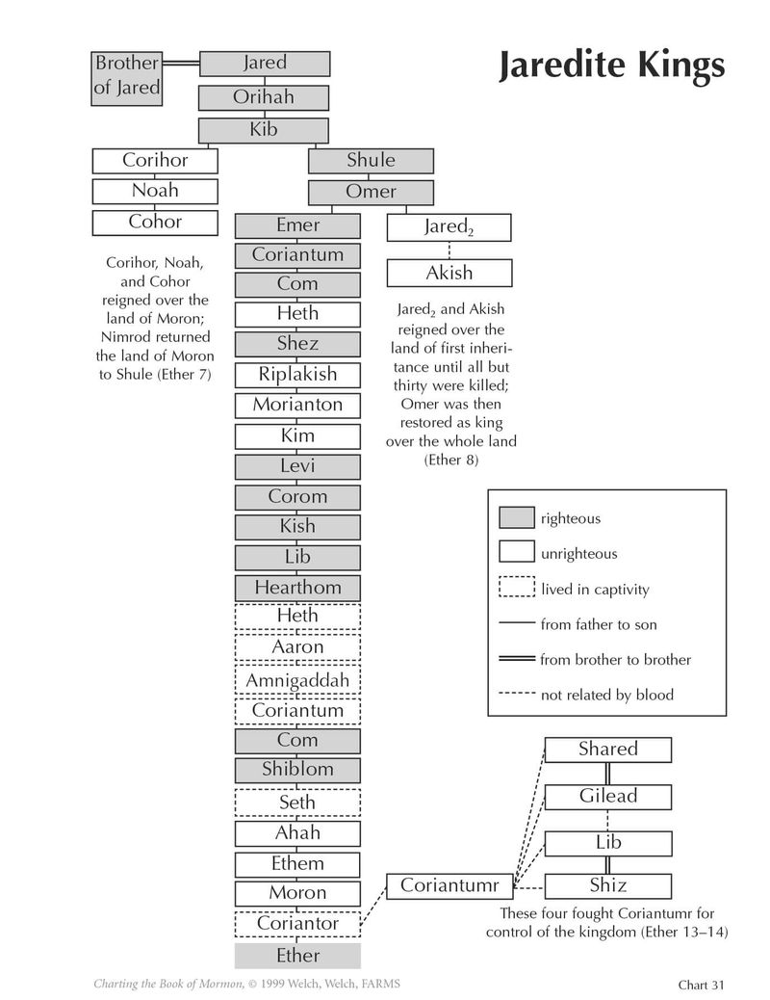

What is the significance of the brother of Jared’s prophecy about kings? (7:5) “As they grew in number, the people desired a king, in spite of the objections of the brother of Jared, who cautioned them that having a king would not be wise in the long run (see Ether 6:23; 7:5). At a much later date, Mosiah, the Nephite seer . . . also warned the Nephites of the dangers of a kingship. . . .
“Under Mosiah’s wise counsel, and after he had translated the account of the Jaredites, the Nephites changed their form of government to judges rather than kings” (Brinley, “The Jaredites—A Case Study in Following the Brethren,” 47–48).
(Welch and Welch [expanded from the work of Lee Prince], Charting the Book of Mormon, chart 31; used by permission.)
Is there evidence of captured kings being allowed to live in captivity? (7:7) “Such is the practice, mentioned many times in the book, of keeping a king prisoner throughout his entire lifetime, allowing him to beget and raise a family in captivity, even though the sons thus brought up would be almost sure to seek vengeance for their parent and power for themselves upon coming of age. . . . It seems to us a perfectly ridiculous system, yet it is in accordance with the immemorial Asiatic usage” (Nibley, Lehi in the Desert, 207–8).
Do we have evidence of swords of steel at this time? (7:9) “‘It seems evident,’ notes one recent authority, ‘that by the beginning of the tenth century b.c. blacksmiths were intentionally steeling iron.’ In 1987, the Ensign reported that archaeologists had unearthed a long steel sword near Jericho dating back to the late seventh century b.c., probably to the reign of King Josiah who died shortly before Lehi began to prophesy. This sword is now on display at Jerusalem’s Israel Museum. The museum’s explanatory sign reads in part, ‘The sword is made of iron hardened into steel, attesting to substantial metallurgical know-how’” (Christofferson, “Prophet Joseph Smith”).
“Matthew Roper in a FairMormon Blog on June 17, 2013, writes about a criticism repeated many times over the years about the mention of steel in the Book of Mormon. In 1884, one critic wrote, ‘Laban’s sword was steel, when it is a notorious fact that the Israelites knew nothing of steel for hundreds of years afterwards. Who but as ignorant a person as Rigdon would have perpetuated all these blunders.’ More recently, Thomas O’Dea in 1957 stated, ‘Every commentator on the Book of Mormon has pointed out the many cultural and historical anachronisms, such as the steel sword of Laban in 600 b.c.’
“We had no answer to these critics at the time, but as often happens in these matters, new discoveries in later years shed new light. Roper reports, ‘It is increasingly apparent that the practice of hardening iron through deliberate carburization, quenching and tempering was well known to the ancient world from which Nephi came” (Christofferson, “Prophet Joseph Smith”).
What do we learn of the Jaredite civilization from the rebellion and intrigues of Noah and King Shule? (7:14–20) “You read your book of Ether and you’ll find the whole history is a tale of fierce and unrelenting struggle for power. It’s dark with intrigue and violence particularly of the Asiatic brand. When the rival for a kingdom is bested, he goes off by himself in the wilderness, bides his time, and gathers an army of outcasts. . . .
“A grand cycle running from unity of the nations to division, and conflict, and hence to paralysis or extinction is repeated at least a dozen times” (Nibley, Teachings of the Book of Mormon, 4:256).
What does the sending of prophets during the reign of Shule teach us? (7:23) “Because the Lord is kind, He calls servants to warn people of danger. That call to warn is made harder and more important by the fact that the warnings of most worth are about dangers that people don’t yet think are real” (Eyring, “Voice of Warning,” 32).
“Why do prophets proclaim unpopular commandments and call society to repentance for rejecting, modifying, and even ignoring the commandments? The reason is very simple. Upon receiving revelation, prophets have no choice but to proclaim and reaffirm that which God has given them to tell the world” (Hales, “If Thou Wilt Enter into Life, Keep the Commandments,” 37).
What happens when the prophets are protected by civil law? (7:25–27) “Among the Jaredites, ‘the people were brought unto repentance’ when the king protected the prophets (Ether 7:25). In contrast, when a later king did not protect the prophets, ‘the people hardened their hearts’ and ‘did reject all the words of the prophets’ (Ether 11:13, 22), with the result that ‘the Spirit of the Lord had ceased striving with them, and Satan had full power over the hearts of the people’ (Ether 15:19). They then reached ‘the fulness of iniquity,’ which brought down upon them ‘the fulness of the wrath of God’ (Ether 2:10–11)” (Merrill, “They Wrote to Us As If We Were Present,” 15).
